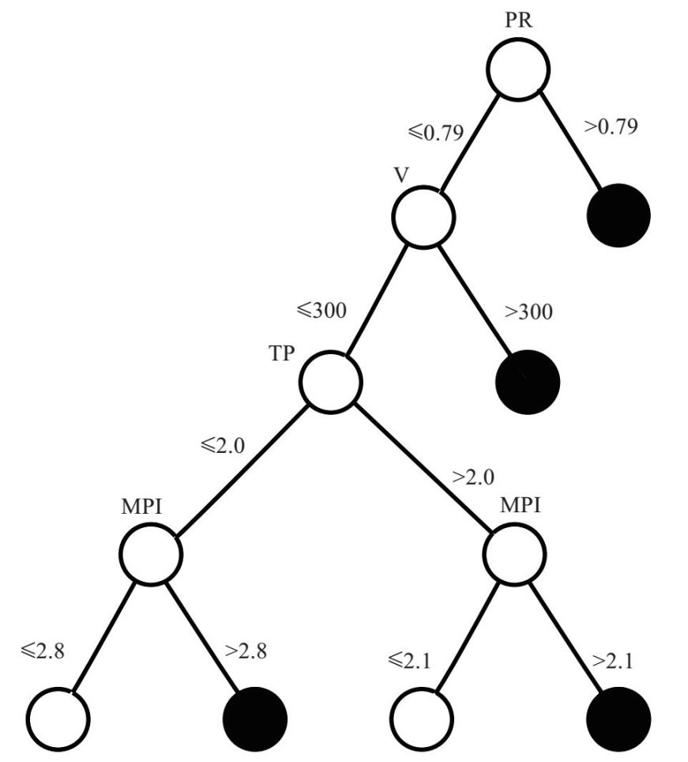

尽管我清楚莫斯科学术界不会有我的一席之地，但是我仍然一如既往地努力钻研数学。马克·索尔在他的文章中说（他称呼我时用了我名字的缩写——埃蒂克）：
埃蒂克等人坚持不懈地探索，就像一群逆流而上的鲑鱼。他们的动力从何而来呢？种种迹象表明，他们在大学时遭遇的歧视不会停止，而且肯定会影响他们的职业生涯。如果他们希望以数学研究作为职业，获得成功的可能性将非常渺茫。在这样的情况下，他们不但没有放弃，反而孜孜不倦地做着准备。为什么？
因为我并不期望得到任何回报，我只是单纯地追求知识带给人的乐趣和激情。我希望把自己的毕生精力都奉献给数学，原因就在于我热爱这项事业。
不过，仅有激情和乐趣是不够的，我确实还需要一份工作。因此，我一方面在私下里与伯亚合作，完成我的主要工作，也就是数学研究；另一方面，我还得在石油天然气学院完成一些“正式”的研究工作。
我在石油天然气学院的导师是应用数学系的雅科夫·霍尔金（Yakov Isaevich Khurgin）。雅科夫曾经是盖尔范德的学生，他非常有魅力，而且深受人们的尊敬。当时他已经快70岁了，不过我们都认为他是“最酷”的老师。他的课有极强的吸引力，他讲课时充满幽默感，学生出勤率最高。尽管我从大学三年级开始就逃掉了大多数的课，但是在雅科夫讲授概率论和统计学时，我总是尽量去上课。大学三年级时，雅科夫成为我的导师。
雅科夫对我非常热情友善。他总是为我着想，当我遇到困难时，他也总是及时帮助我。比如，有一次，我在住宿方面遇到问题，他动用自己的关系为我排忧解难。雅科夫非常聪明，善于“与体系打交道”。尽管他是犹太人，但是他在石油天然气学院却享有崇高的地位，是一位正教授，还领导着一个实验室，其研究涉及石油开采和医药等多个领域。
同时，雅科夫积极从事数学知识普及工作，写过好几本适合非数学专业学生阅读的数学畅销书。其中有一本叫作“那又怎么样”（So What?），我特别喜欢这本书。书中，雅科夫介绍了他与科学家、工程师和医生合作的经历。通过与这些人的对话，他以轻松愉快的方式将很多有意思的数学概念（大多数涉及他的专业，即概率与统计学），以及这些概念的应用娓娓道来，悉心阐释。该书选择了这样一个书名，目的是表现数学家遇到现实问题时的好奇心。他写的这些书，还有他那积极向大众推广数学理念的热情，都深深地启发了我。
雅科夫有多年与医生（大多是泌尿科医生）合作的经历，他最初与医生合作是出于个人原因。“二战”时，他作为数理系的一名学生应征入伍，上了前线。由于战壕中的恶劣环境，他的肾脏出了问题。这对他来说是件幸事，他因此住院，并幸存下来，而与他一起入伍的同学，却大多在战斗中死于非命。不过，从那以后，他的肾脏就留下了病根儿。在苏联，医药是免费的，但是医疗服务的水平较低。要想得到较好的治疗，病人要么和医生有较好的私人关系，要么向医生行贿。不过，雅科夫有别人没有的优势：他拥有数学专业知识。凭借这个优势，他与莫斯科泌尿科的一些出色的医生交上了朋友。
这对于雅科夫来说非常重要。无论何时，只要他的肾脏不适，他就可以住进莫斯科最好的医院，接受优秀医生的优质服务。对于这些医生来说，同雅科夫处理好关系也同样重要，因为雅科夫可以帮助他们分析数据，为他们揭示出一些以前不为人所知的有趣现象。雅科夫经常说，医生们需要分析病人具体的情况，然后做出具有针对性的医疗诊断，这就是他们的思维习惯和特点。但是，也是因为这个特点，他们有时很难关注全局性问题，无法发现一般性规律和原则。而数学家可以在这方面为他们提供帮助，因为数学家的思维方式与医生完全不同：“我们接受过相关训练，会寻找并分析一般性规律。”雅科夫的思维方式，得到了他的医生朋友们的赞赏与认可。
在雅科夫担任我的导师之后，他安排我参与他的医学研究项目。在雅科夫指导我学习的两年半时间里，我们一共完成了三个泌尿学课题，三位年轻的泌尿学专业研究生利用这些成果，完成了他们的博士论文。我因此成为医学杂志论文的合作作者，甚至还与他人合作申请了一项专利。
至今，我还清楚地记得第一个项目开始时的情景。我和雅科夫一起去见阿列克谢·韦利卡诺夫（Alexei Velikanov），后者是一位年轻的泌尿科医生。他的父亲是莫斯科的一位优秀的内科医生，与雅科夫有多年的交情（也为雅科夫治过病），因此，他请雅科夫照顾他的儿子。阿列克谢从100名做过前列腺肿瘤（一种良性肿瘤，常见于老年病患）切除手术的病人那里收集了各种数据，包括手术前后的血压等检测结果。他希望根据这些数据可以确定什么时候做这项手术的成功率更高，并应用于他的临床实践。
阿列克谢把这些数据整理到一张很大的纸上，让我们观察和分析。他把希望寄托在我们身上，请我们帮助他处理这些数据。后来我发现，这种情况经常发生。在医生、工程师等人的眼中，数学家手里仿佛有一根魔棒，随便挥一挥，就能从他们收集的那些杂乱无章的数据中得出某些结论。当然，这种想法根本不切实际。我们的确掌握了一些有效的统计分析方法，但是在大部分情况下，我们却无法采用这些方法，因为他们收集的数据并不精确，或者分属不同类型。有的数据比较客观，有的却比较主观（比如，病人“觉得”）；有的是定量数据，如血压和心率，有的则是定性数据，如对一些具体问题的肯定或否定回答。要把这些不同类型的数据输入统计公式，难度非常大（坦率地说，这是不可能的）。
如果医生提出的问题得当，他就会发现有些数据与问题的关系不大，有些甚至可以直接删掉。从我的经验来看，在医生们收集的这些数据中，只有10%至50%的信息，会在诊疗时用到。但是，如果你问医生，他们不会坦率地承认，而是坚称所有数据都非常有用，他们甚至会举出例子，以证明他们的确考虑了这些信息。其实在大多数类似的情况下，他们在做出决定时，只会依据为数不多的关键信息，而忽略掉大部分数据。但是，要让他们相信这个事实，还得费一番工夫。
当然，也有一些问题，只需将数据输入某个统计程序就能得出结论。不过，在研究这些项目的过程中，我逐渐意识到，医生们之所以需要数学专业人士的帮助，并不是因为我们会使用这些统计程序（毕竟，统计程序的用法并不难，人人都能学会），而是因为我们能设计出正确的问题，然后通过不带有任何偏见的冷静分析得出结论。对于没有接受过数学专业训练的人而言，真正有用的似乎是“数学思维习惯”。
在我参与的第一个课题中，我们用这种数学思维习惯，删掉了无关数据，并找到了剩余参数间的非凡联系，即相关性。这项工作并不轻松，我们花费了好几个月的时间才完工，但是结果令人满意。我们合写了一篇论文，介绍我们的成果，阿列克谢还把这些成果写到了他的博士论文中。我和雅科夫应邀参加了他的论文答辩，还有栗弗席兹。栗弗席兹是我的好朋友，也是石油天然气学院的一名学生，他与我们一起参与了这个项目。
我记得，一位医生在答辩会上问，得出这些结果的计算机程序叫什么名字。雅科夫回答说“爱德华与亚历山大”，他说的是实话。我们没有使用计算机，而是用一个简陋的计算器和手工操作，完成了所有的计算工作。计算（比较简单）不是关键，真正重要的是我们提出了恰当的问题。参加答辩会的一名杰出的外科医生说，这个项目证明数学在医学领域可以发挥重要作用，以后还可能会发挥更重大的作用。这太令人意想不到了，我们的研究竟然受到了医学界的认可。对于这个结果，雅科夫感到非常高兴。
随后不久，雅科夫让我参与泌尿学研究的另一个项目。该项目与肾脏肿瘤有关，也是博士论文项目。同样，我幸不辱命，顺利地完成了这个项目。
我参与的第三个（也是最后一个）医学项目非常有意思。谢尔盖·阿鲁秋尼扬（Sergei Arutyunyan）这位年轻医生在撰写博士论文时，需要有人帮助他分析数据。我和他关系不错，便义不容辞地担起了这个任务。他研究的那些患者在接受肾脏移植手术时发生了排斥反应。在这种情况下，医生面临两种选择：采取措施保住新移植的肾脏，或者将之摘除。他必须迅速做出决断，从两种方案中选择一个，但是他的这个决定将会产生深远的影响：如果保住肾脏，病人可能会死亡；如果摘除肾脏，病人就需要再移植一个肾脏，但肾源十分稀缺。
谢尔盖希望可以根据超声波检查的定量结果，做出从统计学角度看最可行的选择。他在这个领域临床经验丰富，收集了大量数据。他希望我能帮他分析这些数据，制定一些有价值的客观标准，以帮助其他医生做出正确合理的判断。他说，还没有人在这方面取得成功；大多数医生都认为这是不可能的，他们宁愿相信自己的那一套“当机立断”的方法。
跟前面的那两个项目一样，这些数据也是从患者身上收集来的，涉及大约40种参数。在我们的例行碰头会上，我不断地提出一些具有针对性的问题，尽可能去确定这些数据间的相关性。不过，这并非易事。谢尔盖和其他医生一样，他的回答总是建立在具体病例的基础上，意义不大。
于是，我决定换一种方法。我想：“既然他每天都要做出这些决定，那么他肯定有自己的一套办法。如果我‘变成他’，进行换位思考，结果会怎么样呢？虽然我没有多少医学知识，但我可以模仿他的决策过程，了解他使用的那些方法，然后以此为基础提出一些规则。”
因此，我提议我们俩一起玩一个游戏。谢尔盖收集了大约270名病人的数据，我从中随机选取了30人的数据，而把其他数据放到了一边。我拿着这些随机抽取的病人的病历，让谢尔盖坐在办公室的另外一角，向我询问病人的情况，我则对照病历回答。我这样做的目的是了解他提问的规律（虽然我不知道他提出这些问题的目的是什么）。比如，有时候他会提出不同的问题，或者提出的问题相同，但是提问的次序不同。这时，我就会打断他：“看上一个病人时，你没有问这个问题。但是这次，你却提出了这个问题，为什么？”
谢尔盖回答道：“上一个病人的肾脏体积是那样的，因此可以排除这种可能。但是这个病人的肾脏体积是这样的，因此很有可能有这个问题。”
我把所有这些对话都记录下来，并尽可能地内化这些信息。多少年过去了，我现在仍能清晰地回忆起当时的场景：谢尔盖坐在办公室角落的椅子上，一边大口大口地吸烟（他的烟瘾很大），一边沉思。我感觉自己正在对他的思维方式进行解构，这件事太有意思了，就好像把完整的拼图拆开，以确定哪些拼图碎片非常关键。
谢尔盖的回答为我提供了有价值的信息。他回答过我提出的三四个问题之后就可以得出诊断结果，我把他的诊断结果与他在患者病历上写下的诊断结果进行了对比，发现两者完全一致。
我们就这样测试了一个又一个病例。通过提问，我已经掌握了他的诊断规律，也能下诊断结论了。在连续测试了6个病例之后，我已经能预测到谢尔盖的结论了。事实上，谢尔盖在大多数诊断中都采取了一种比较简单的法则。
当然，也有一些病例不适用这种法则。不过，能迅速诊断90%至95%的病例，已经很了不起了。谢尔盖告诉我，在关于超声波诊断的已有文献中，还没有发现类似的诊断准确率。
“游戏”结束后，我得出了一个具体规则，并绘制出一幅决策树形图（见下页）。树形图的每个节点都有两条线通往其他节点；在第一个节点处，医生根据具体问题得到的回答，决定在下一级中的两个节点中如何做出选择。假设第一个问题询问的是移植肾脏外周血管阻力（PR）指数（谢尔盖在他的研究中提出的一个参数）。如果该指数大于0.79，就表示很有可能发生了排斥反应，病人需要立刻做手术。在这种情况下，我们移动到右侧的黑色节点处。如果该指数小于0.79，我们则去到左侧节点处，提出下一个问题：肾脏的体积（V）有多大？依此类推。针对病人的每项数据，我们在树形图上都形成了一条具体的路径。在经过至多4个步骤之后，树形图就会结束[目前，剩下的两个参数（即TP与MPI）有什么含义，对于我们来说并不重要]。如图所示，末端的节点表示最后的结论：黑色节点表示“需要做手术”，白色节点表示“无须做手术”。
我把前面放到一旁的约240个病例拿过来，用这个方法进行测试。结果表明，一致性程度很高，约有95%的病例都得到了准确的诊断结果。
这套算法用非常简单的语言，描述了医生在做诊断时考虑的一些要点，揭示出描述病人情况的哪些参数与诊断结果之间有最密切的关系。树形图把最初的约40个备选参数缩减到4个。例如，谢尔盖提出的外周血管阻力指数可以反映血液流过肾脏的情况，其重要性在这套算法中得到了充分的体现。该参数在医生做出决策的过程中能起到十分重要的作用，其本身就是一个重要发现，也是该领域需要进一步研究的一项重要内容。其他医生在诊断时也可以应用这套算法，他们还可以进行测试，甚至做出细微的调整，使整套算法发挥更大的效用。

我们写了一篇论文介绍这套算法，谢尔盖也以此为基础完成了他的博士论文。随后，我们申请了专利，一年之后，专利申请获得了批准。
在接受雅科夫指导的过程中，我们俩的关系十分融洽。不过，我在数学上的“其他”活动（与富克斯及费金的合作）从来没有告诉过其他人，就连对雅科夫我也一直守口如瓶。应用数学好像我的“合法妻子”，而理论数学则是我的“地下情人”。
就在我为找工作一事一筹莫展时，雅科夫告诉我，他在石油天然气学院领导的那个实验室愿意接收我担任助理研究员，而且一年后我就可以攻读博士学位。如果接受这份工作，在可以预见的将来，我的就业前景将会一片光明。他的这个建议似乎非常诱人，但我还是会遇到大量障碍。我的父亲在我申请报考石油天然气学院之前曾实地考察过，他当时就对这类阻碍有所察觉。
当然，雅科夫也清楚这个情况。他在石油天然气学院工作了几十年，对这里的一切都了如指掌。他自己能在这里就职，是因为维诺格拉多夫（Vinogradov）院长亲自出面邀请他，雅科夫对院长也十分尊重。
我的工作问题无须维诺格拉多夫院长亲自定夺，而是会交由学校的中层领导处理。只要申请人的姓氏中有犹太裔的痕迹，这帮家伙肯定不会给他任何机会。但是雅科夫熟悉这一套流程，知道该如何应对。我在石油天然气学院的最后一学期开始之后，留给我找工作的时间已经不多了。雅科夫打印了一份任命书，放到公文包里随身携带。只有有机会同维诺格拉多夫院长见面，雅科夫就会递交这份任命书给院长。
这样的机会很快就来了。有一天，当雅科夫走进学校大门时，正好碰到了维诺格拉多夫院长。维诺格拉多夫院长很高兴地跟他打招呼：“雅科夫，最近好吗？”
“非常糟糕。”雅科夫满面愁容地说（看来，他的表演天赋很不错）。
“怎么了？”
“我们的研究一直进行得很顺利，取得了一些成果。但是，现在却遇到了麻烦，缺少人手。我指导的一个学生相当优秀，今年就要毕业了，可我没有办法招收他。”
我觉得，维诺格拉多夫院长肯定是想在雅科夫面前展示自己的权威（这正中雅科夫的下怀），他对雅科夫说：“别着急，这件事我来处理。”
于是，雅科夫赶紧把任命书交给了他，维诺格拉多夫院长也接过去了。
通常，这样的任命书在到达维诺格拉多夫院长的办公桌之前，需要经由12个人签字，其中有些人肯定会万般阻挠，让它无疾而终。但是，现在维诺格拉多夫已经签过字了，他们还能怎么样呢？他是学校的最高领导，他们不可能违背他的意愿。他们虽然对这件事咬牙切齿，但最终也只能服从，乖乖地签字。我真的很想看看，当他们看到任命书上的维诺格拉多夫院长的签名时，其表情是什么样子的！雅科夫凭借他的聪明才智，成功地帮我找到了工作。